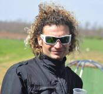
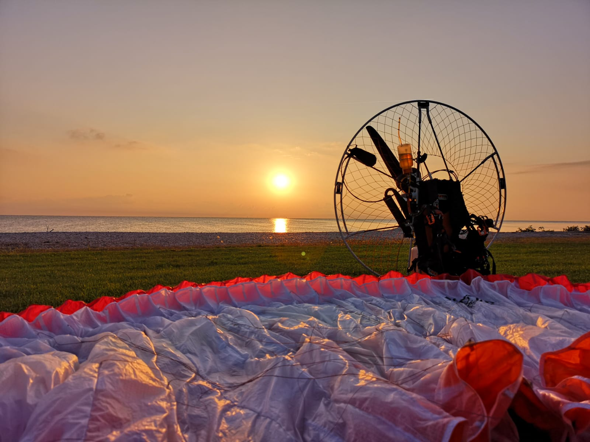
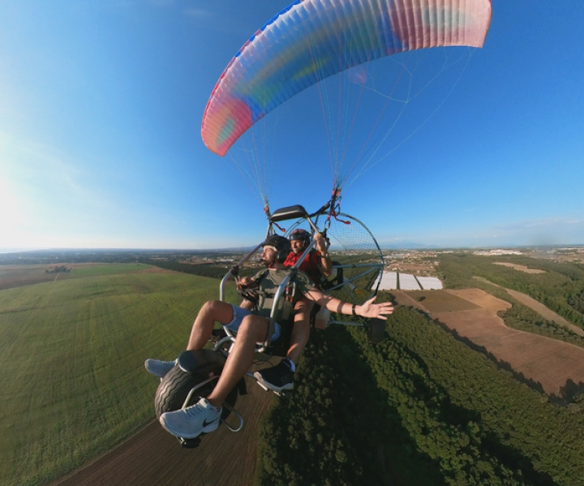
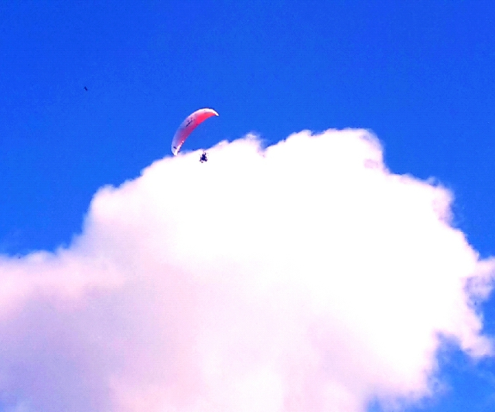
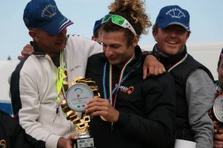

Impara a volare con il campione del mondo

"Una volta che avrete conosciuto il volo camminerete sulla terra guardando il cielo, perché è lá che siete stati ed è lá che vorrete tornare."
Se sogni di volare...
Per tutti gli interessati al conseguimento dell'attestato di volo in paramotore e paracarrello la ParaEvoluti Roma collabora con l'istruttore Pasquale Biondo, pilota ed istruttore affermato a livelli internazionali, che vi seguirà passo dopo passo sino al conseguimento dell'attestato di volo.
Una volta preso l'attestato
Una volta conseguito l'attestato sarà possibile entrare a far parte del gruppo ParaEvoluti Roma, composto da piloti abilitati al volo in paramotore, che ha come suo scopo la promozione e la divulgazione di questa meravigliosa disciplina.
Chi fosse fosse interessato può contattare direttamente l'istruttore Pasquale Biondo.
L’istruttore dedica e concentra tutto il suo tempo e le sue energie unicamente al volo in paramotore, in modo da poter insegnare tecniche di pilotaggio sempre piú perfezionate ed appropriate alle nuove attrezzature e sviluppate specificatamente per poter ottenere il massimo divertimento e la massima sicurezza da ogni volo
L’allievo entrerá nell’ottica del volo in paramotore sin dalla sua prima lezione, durante tutta la sua formazione vivrá in un contesto ed in un ambiente dove verrá praticato esclusivamente il volo in paramotore e paracarrello da piloti di vari livelli.
Questo permetterá all’allievo di prendere sin da subito consapevolezza della disciplina e di ritrovarsi parte di un gruppo che condivide i suoi stessi interessi.
PROGRAMMI DI FORMAZIONE

I corsi sono conformi al Regolamento emanato dall’Aero Club d’Italia (conforme alla L. 106 del 25/03/1985; DPR 404 del 04/08/1988; DPR 207 del 30/06/1933; DM Ministero dei Trasporti del 19/11/1991 e successive modificazioni; DPR 133 del 09/07/2010) e sono finalizzati al conseguimento dell’Attestato VDS/VM di volo in Paramotore e Paracarrello. La Scuola è operativa tutto l’anno e tutti i giorni della settimana. La durata del corso è variabile in funzione alle caratteristiche dell’allievo ed alla sua disponibilità di tempo da dedicare all’addestramento.
L’addestramento pratico viene svolto su un Campo Volo certificato, dove l’istruttore segue individualmente ogni singolo allievo durante tutto il percorso formativo. Le lezioni teoriche si tengono tramite call conference, ed hanno lo scopo di fornire all'allievo un’appropriata cultura aeronautica, preparandolo per l’esame finale per il conseguimento dell’attestato. Con l'iscrizione alla Scuola di Volo l'allievo potrà usufruire dell'attrezzatura messa a disposizione per l'addestramento pratico, del campo volo con le sue strutture e dell'aula didattica. Come da Regolamento, ciascun allievo è coperto dall'assicurazione della scuola per tutta la durata del corso. Istruttore: Pasquale Biondo
STAGE DI PERFEZIONAMENTO

Lo stage ha come obiettivo quello di migliorare e perfezionare le abilitá e la logica di pilotaggio attraverso l’acquisizione di tecniche specifiche: in questo modo il pilota aumenterá il divertimento e la sicurezza dei suoi voli. Verrá inoltre spiegato il funzionamento del profilo reflex e come sfruttare al meglio le potenzialitá delle nuove ali da paramotore ottimizzando l’uso del comando e del tip steering in funzione della configurazione dei trim e della speed-bar. La parte iniziale dello stage sará dedicata alla corretta ed appropriata regolazione dell'attrezzatura di ogni singolo pilota. Ogni missione di volo sará preceduta da una lezione teorica. A conclusione di ogni sezione di addestramento verrá analizzato l’operato e quindi la progressione di ogni singolo pilota. Lo stage viene svolto da un istruttore abilitato ed è riconosciuto dall'Aero Club d'Italia. La durata dello stage è di 3 giorni (nota: il programma puó subire delle variazioni in funzione delle condizioni meteo).
CORSO DI ABILITAZIONE AL TRASPORTO PASSEGGERO

CORSO DI VOLO IN TERMICA

La maggior parte dei piloti di paramotore e paracarrello non riconoscono e quindi non sfruttano un'importante potenziale che il proprio mezzo ha, ovvero quello di poter risalire all'interno di un'ascendenza senza l'uso del motore.
Scoprirete che, con le condizioni meteorologiche adatte, sarà possibile volare anche per diverse decine di chilometri senza l'uso del motore, questo non sará solo molto divertente ma anche utile ad ottimizzare l'autonomia durante i voli di distanza.
Di seguito alcuni punti che saranno trattati sia a livello teorico che pratico:
- Ascendenza termica
- Ascendenza di dinamica
- Dove poter trovare le ascendenze
- Dove non è opportuno volare
- Condizioni meteorologiche adatte allo sviluppo di ascendenze
- Ottimizzare la configurazione di volo
- Stabilizzare l'ala in turbolenza grazie ad un appropriato uso del motore
- Spegnere il motore e risalire in termica.
La parte iniziale dello stage è dedicata alla corretta ed appropriata regolazione dell'attrezzatura di ogni singolo pilota. Ogni missione di volo è preceduta da una lezione teorica. A conclusione di ogni sezione di addestramento viene analizzato l’operato e quindi la progressione di ogni singolo pilota. Lo stage viene svolto da un istruttore abilitato ed è riconosciuto dall'Aero Club d'Italia come "Stage di Perfezionamento". La durata dello stage sarà di 2 giorni (nota: il programma puó subire delle variazioni in funzione delle condizioni meteo).
FORMAZIONE

Titolo di Studi: Laurea in Ingegneria Aerospaziale Istruttore di Volo in paramotore e paracarrello. Esaminatore AeCI. Test-Pilot e collaboratore nella progettazione di ali reflex. Membro della Nazionale Italiana di Volo in Paramotore
ATTIVITÀ AGONISTICA IN PARAMOTORE
2022 - Campionato Mondiale (Brasile): 1° classificato
2021 - Campionato Francese: 3° classificato cat. Open
- Campionato Italiano: 1° classificato
2020 - Campionato Italiano: 1° classificato
2019 - Campionato Italiano: 1° classificato
2018 - Campionato Italiano: 1° classificato
2017 - Campionato Italiano: 1° classificato
- Campionato Europeo
2016 - Campionato Italiano: 1° classificato
- Campionato Mondiale (Inghilterra): 3° classificato
2014 - Campionato Mondiale (Ungheria)
- Campionato Italiano: 1° classificato
2013 - Baltic Sea Open Paramotor Championships (Estonia): 1° classificato
- Campionato Mondiale di Slalom (Francia)
2012 - Campionato Mondiale (Spagna)
- Campionato Francese
- Campionato Italiano: 2° classificato
- Fly Games (Italia): 1° classificato
2011 - Fly Games (Brasile): 5° classificato
- Campionato Francese
2009 - Campionato Mondiale (Repubblica Ceca)
2008 - Campionato Europeo (Polonia)
- Campionato Italiano: 2° classificato
2005 - Campionato Mondiale (Francia)